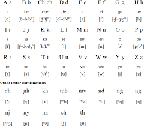

The language of Kiswhili is spoken by more than 100 million people
worldwide. Its Arabic and Bantu roots add a deepened cultural and
history experience for new language learners.
Crafted in AD 1711, the Swahili alphabet holds 24 letters and is based from Latin and Arabic
script. Its alphabet does not contain Qq or Xx; as a result, these sounds do not
exist. In the graphic below, the alphabet letter names and pronounciation are outlined:

Pronunciation
When approaching Swahili, it is most important to establish a strong understanding of the alphabetic sounds. For the most part, words in Swahili will be projected in the same way they sound ‘mentally’ in English.
a pronounced as in ah!
e pronounced as in say
i prounounced as in be
o prounounced as in grow
u prounounced as in too
ch prounounced as in child
dh prounounced as in dad
gh prounounced as in gate
kh prounounced as in kite
ng' prounounced as in ring
ny prounounced as in Spanish n
mw prounounced as mm then w
sh prounounced as in shower
th prounounced as in theatre
Verbal Forms
As we know in English, accurate combination and vocalization of pronoun and verb
tense is essential for expressing feelings, emotion, and daily
activity. Swahili verb forms are composed of three main parts: 1.
introductory pronoun, 2. the verb tense, 3. the conjugate verb
ending. The following format is appicable to true statments about
the past, presented, and future.
Swahili uses pronouns such as me, you, he/she, we, etc.
They are denoted in the following table:
English
Pronoun (Swahili)
Verb Prefix
me
mimi
ni-
you
wewe
u-
he/she
yeye
a-
us/we
sisi
tu
you(pl.)
ninyi
m-
they
wao
wa-
In the most left hand column we have the English pronouns
that we are used to describe 'who' is preforming events.
In the second column, we have the Swahili equivalent to the English given
pronouns. Finally, in the last column, we have the way in which
these pronouns are expressed denoted by: ni, u, a, tu, m, and wa.
Once we have mastered the verb prefixes, we will then transition
into learning basis tenses of the past, present and future. Use the mnemonic: NATALI
Tense
Verb Prefix
Present
-na-
Future
-ta-
Past
-li-
Now, we will introduce a few verbs so that we can practice combining pronouns,
tense, and verbs.
Verb Conjugaton in Swahili
Verb in English
-lala
sleep
-potea
lost
-soma
studying
Figure 1
Pronoun
Past
Present
Future
mimi
nililala
ninalala
nitalala
wewe
ulilala
unalala
utalala
yeye
alilala
analala
atalala
sisi
tulilala
tunalala
tutalala
ninyi
mlilala
mnalala
mtalala
wao
walilala
wananlala
watalala
If you would like to express a negative statment or something
that has not yet occurred, we will follow the following layout.
Here, we still have the structure of prefix, verb tense, and
verb ending. The difference is that beginning prefixes reflect
upcoming events. '-ku-' is added as the verb tense to indicate
the infinite form.
While further developing your pronunciation within Swahili,
you will begin to notice the letter ‘M’ at the beginning of words
such as that in ‘Mke’ (wife in English). We pronounce the ‘M’ as
that when we say ‘hmm’ or ‘mmm.’ Typically, English speakers eliminate
this sound altogether, but it is essential for word distinction.
There are no accent markers within the language.
The letter ‘N’ at the beginning of a word before a constant works the same way
Nkosi -- (e)n-koh-zee
Ndlovu -- (e) nd-loh-voo
Swahili holds words with the letters ‘bu’ inside. Many English speakers pronounce this as the ‘oo’ in boot,’ but we should think of it as the ‘oo’ in book.’
In Swahili, the ‘sound’ such as that in Thabo or Thato should be pronounced ad that in ‘boot’
Thabo - Tah-boo
Thato - Tah-too
Greetings and Tongue Twisters
Hello: Habari!/ Jambo! (informal) or Shikamoo! (formal)
The most troublesome areas when learning Swahili relates to
pronunciation due to a lack of communication with other Swahili speakers
or intentional methods for language memorization and retention. To help combat these
problems, we suggest to:
{kind=link}